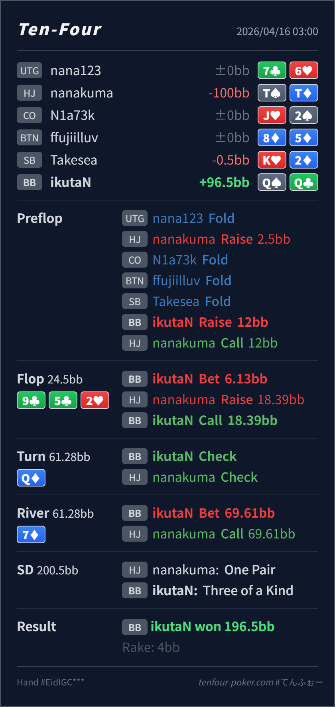

Preflop
良いQ♠Q♣ は BB の明確な value 3bet 上位です。
主論点は、HJ open-call からの 3bet pot で 9♣ 5♣ 2♥ の flop raise を BB の Q♠Q♣ がどう受けるかと、turn Q♦ で top set になったあとにどこで stack を取り切るかです。結論は、相手の flop raise 自体がかなり非GTO寄りで、それに対する Hero の call と river jam はかなり噛み合っています。理論寄りに一段だけ見直すなら turn Q♦ の先打ちで、check は成立しても baseline は bet / jam 寄りです。river jam も、turn check-back 後に残る TT/JJ 付近の bluff-catcher に対して、indifference（無差別）に近い圧をかけながら最大を取りにいくサイズとしてかなり自然です。
Q♠Q♣T♠T♦9♣ 5♣ 2♥ / Q♦ / 7♦Q♦ の打ち方です。9♣ 5♣ 2♥ の 3bet pot で、HJ 側の raise は本来 99/55/22 と club semibluff が主軸です。T♠T♦ のような no-club one-pair raise はかなりオーバーアグレ寄りなので、BB は QQ を過剰に降ろす必要がありません。Q♠Q♣ は overpair であり、しかも raise に対する上位の call bucket です。ここで 3bet し返すと、bluff や弱い value をかなり落として、set や強い draw に寄せやすくなります。Q♦ で top set になったあとは SPR ≒ 1.1 なので、理論寄りには先に bet / jam して club draw や sticky な JJ-TT から回収する方が素直です。ただ、check-back を受けた時点で HJ range はかなり cap するので、river 7♦ の jam はとても打ちやすくなります。小さく広く取るより、TT/JJ 付近の bluff-catcher をちょうど苦しめるサイズとしても筋が通っています。Q♠Q♣T♠T♦2.5BB, BB raise 12BB, HJ call9♣ 5♣ 2♥ / Q♦ / 7♦6.13BB, HJ raise 18.39BB, BB call69.61BB, HJ callQQ, Villain one pair TT
良いQ♠Q♣ は BB の明確な value 3bet 上位です。
9♣ 5♣ 2♥かなり良いQ♠Q♣ は overpair で、raise に対してかなり強い call bucket です。
Q♦良いがややトラップ寄り
Hero は top set でほぼ最上位です。
7♦かなり良い
Hero の set はこの capped range に対して強い pure value です。
| 論点 | その場で起きがちな見え方 | どこがズレたか | 次回の基準 |
|---|---|---|---|
flop の QQ vs raise | overpair なので 3bet して守りたくなる。逆に raise が強く見えて降りたくもなる | この board の raise は最上位だけでなく club semibluff や過剰アグレも混ざりえます。Q♠Q♣ はその相手 range に対して強い call で、3bet はむしろ worse を落としやすいです。 | 3bet pot の raise を受けたら、自分が何に勝っていて、再レイズすると何が降りるか を先に分ける |
turn Q♦ 後の設計 | set になったので即 jam 一択か、逆に trap 一択に見えやすい | SPR がかなり低いので bet / jam は本線ですが、check も mix としては成立します。大事なのは、check-back を受けたら相手 range がかなり cap するので、river では受け身に回らず大きく回収することです。 | top set + 低SPR は bet / jam baseline, check mix と整理し、check-back を受けたら river は強く取りにいく |
| ストリート | その時点の見え方 | 実ハンドの位置づけ | 評価 | その場の一手 |
|---|---|---|---|---|
| Preflop | HJ の open-call range には JJ-TT, AQs/AJs, suited broadway などの強め continue が残ります。 | Q♠Q♣ は BB の明確な value 3bet 上位です。 | 良い | 12BB は素直です。ここは問題ありません。 |
Flop 9♣ 5♣ 2♥ | HJ の raise は本来 set と club semibluff が主軸ですが、実戦では TT/JJ のような overplay も混ざりえます。 | Q♠Q♣ は overpair で、raise に対してかなり強い call bucket です。 | かなり良い | c-bet は自然です。raise に対しては 3bet より call がきれいです。 |
Turn Q♦ | flop raise-call 後の HJ range には set、club draw、TT/JJ の過剰バリューが残ります。SPR はかなり低く、stack を入れやすい局面です。 | Hero は top set でほぼ最上位です。 | 良いがややトラップ寄り | default は bet / jam で十分です。check も成立しますが、相手の check-back を見越した mix として使いたいです。 |
River 7♦ | turn check-back で HJ range は TT/JJ, missed club, まれな slowplay にかなり寄ります。86s や diamond 完成は理屈上あるものの、密度は高くありません。 | Hero の set はこの capped range に対して強い pure value です。 | かなり良い | jam はとても良いです。TT/JJ 付近の bluff-catcher を indifference（無差別）に近いところまで追い込みつつ、小さく刻むより最大を取りにいけます。 |
強い hand だから再レイズ ではなく、call で bluff と弱い value を残せるか を先に見るとぶれにくいです。SPR がかなり低いなら、まずは bet / jam が基準です。check を選ぶなら、その先の river 回収までセットで考えると line がぶれません。勝ったから良い ではなく 相手の bluff-catcher がどのサイズまで続けるか で見直すと精度が上がります。今回は turn check-back 後の TT/JJ に対して jam まで十分候補です。